Documentazione
Manuale di Farō Reader
Farō Reader legge i libri ad alta voce e ti fa vedere la parola che sta leggendo. È pensato per chi è dislessico. Questo manuale descrive la versione 0.4. Le immagini vengono da un telefono; sul tablet le schermate sono più larghe ma i comandi sono gli stessi.
Come sono fatti i comandi
Ogni comando ha un simbolo e una parola. Il simbolo è sempre lo stesso in tutta l'app: la freccia è sempre "Indietro", la cuffia è sempre "Ascolta".
- Le tessere con il cerchietto sono scelte: quella scelta ha il fondo colorato e la spunta.
- Il pulsante giallo è il più importante della schermata: Leggi.
- L'altoparlante nel cerchio legge ad alta voce la parte dello schermo dove si trova. Mentre legge, ogni scritta si illumina di giallo. Toccalo di nuovo per fermarlo.
Non c'è mai fretta: le domande restano sullo schermo finché non rispondi.
La libreria
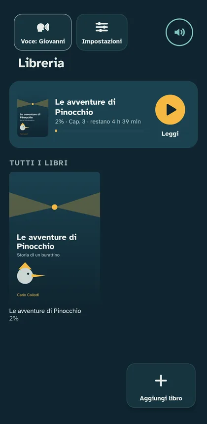
È la prima schermata. In alto:
- Voce: scegli chi legge. Nella finestra tocchi una voce e senti subito come parla.
- Impostazioni: tutto quello che riguarda l'app.
- Altoparlante: legge la schermata.
Sotto c'è il libro che stavi leggendo: tocca Leggi per ripartire da dove eri. Più in basso ci sono tutti i tuoi libri. Tocca una copertina per vedere la scheda del libro.
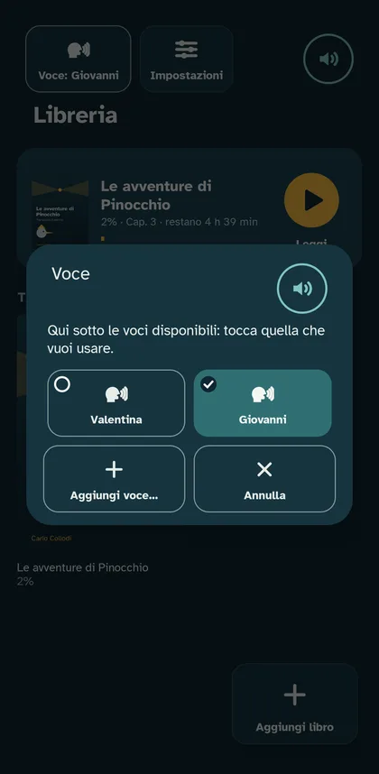
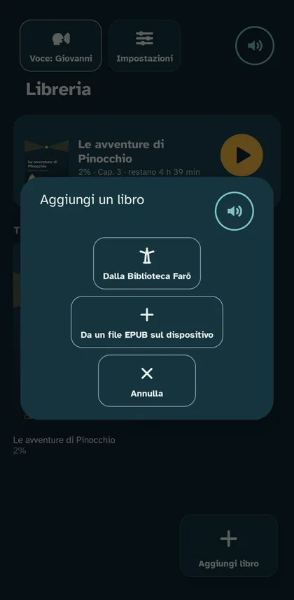
Aggiungere un libro
Tocca Aggiungi libro, in basso a destra. Puoi scegliere:
- Dalla Biblioteca Farō: libri liberi, già pronti per essere letti bene. Serve internet solo per scaricarli.
- Da un file EPUB sul dispositivo: i tuoi libri, se non sono protetti. Fa parte di +Plus, la versione completa.
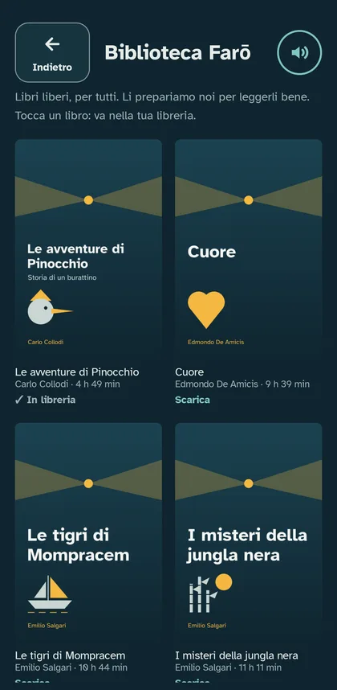
Leggere

In alto c'è la barra del titolo:
- Indietro: torni alla libreria. Il segno resta dove eri.
- Ascolta: passi all'audiolibro.
- Aiuti: come ti aiuta l'app mentre leggi.
- Testo: carattere, spazi e colori della pagina.
In basso ci sono i comandi di lettura:
- Leggi fa partire la voce. Diventa Pausa mentre legge.
- Frase prima e Frase dopo spostano la lettura di una frase.
- Velocità cambia quanto in fretta legge la voce.
- Capitoli apre l'indice del libro.
La parola che la voce sta leggendo è gialla e sottolineata. La frase intorno ha un fondo leggero. Sopra i comandi vedi quanto hai letto del libro e quanto manca alla fine del capitolo.
In orizzontale i comandi stanno in una colonna a destra, così il testo ha più spazio:

Il fumetto con le sillabe

Tocca una parola: sopra compare grande, divisa in sillabe. La voce la legge una sillaba alla volta e poi intera. Si chiude con la ✕, toccando fuori o con Leggi. Il fumetto fa parte di +Plus.
Aiuti

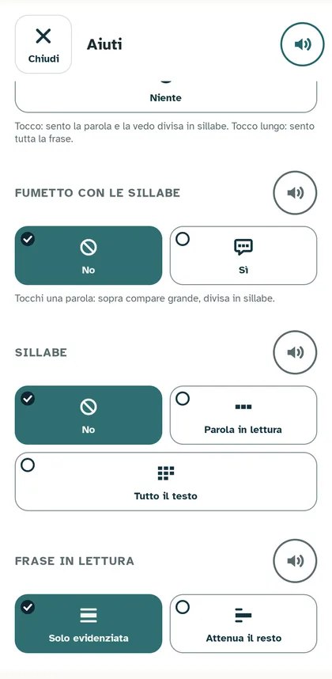
- Quando premo Play: Ti leggo io (legge la voce), A turno (una frase la voce, una tu), Solo ritmo (niente voce: la parola gialla avanza e tu leggi seguendola). Con A turno e Solo ritmo il pulsante Velocità diventa Ritmo, con un animale per ogni passo: dalla lumaca al ghepardo.
- Tocco su una parola: Leggi da qui, Dimmi la parola oppure Niente (così puoi seguire la riga con il dito).
- Fumetto con le sillabe: acceso o spento.
- Sillabe: no, solo la parola in lettura, oppure tutto il testo diviso in sillabe.
- Frase in lettura: solo evidenziata, oppure Attenua il resto (le altre frasi più chiare).
Testo
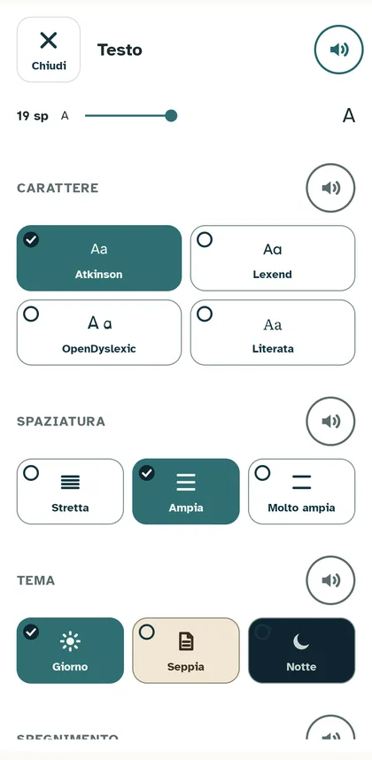
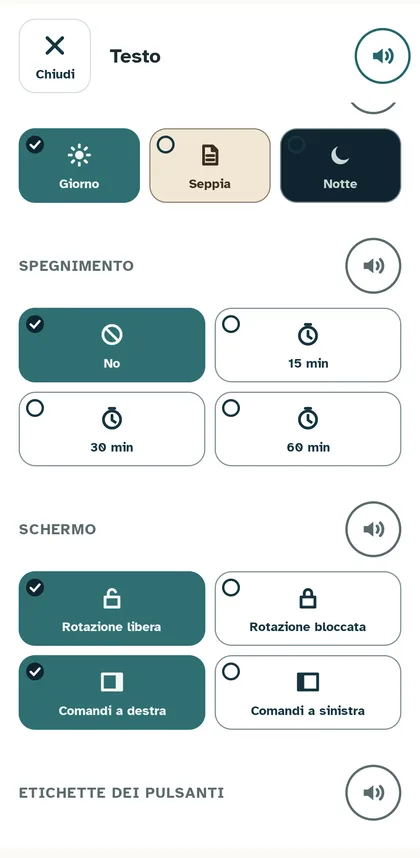
- Dimensione del carattere, con la barra in alto.
- Carattere: quattro caratteri facili da leggere. Ognuno si vede scritto con sé stesso.
- Spaziatura: quanto spazio tra le righe e tra le lettere.
- Tema: Giorno, Seppia o Notte.
- Spegnimento: la voce si ferma da sola dopo un po'.
- Schermo: rotazione libera o bloccata; comandi a destra o a sinistra.
- Etichette dei pulsanti: sempre, oppure solo il simbolo.
Capitoli e velocità
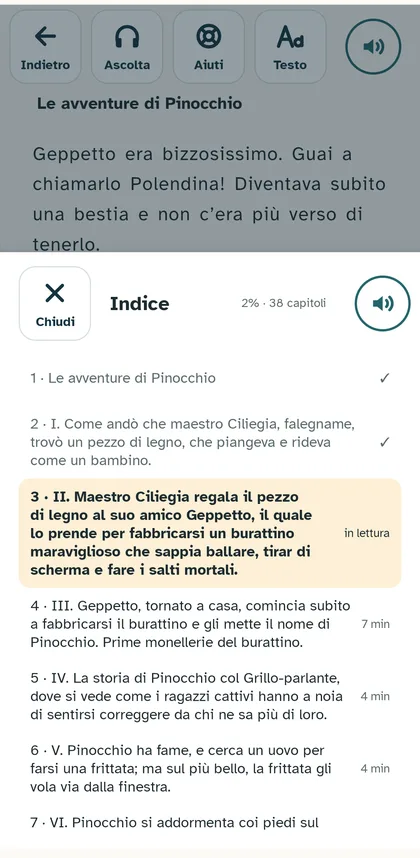
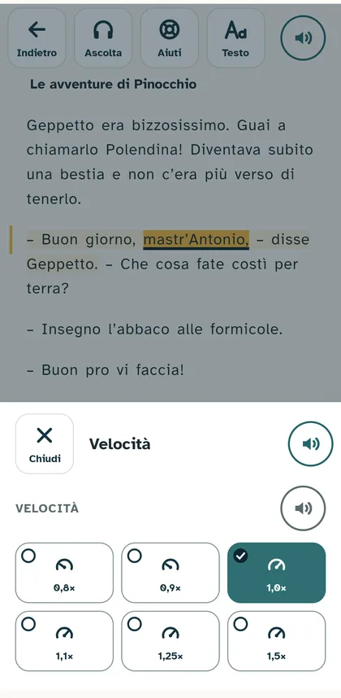
Nell'indice il capitolo che stai leggendo è evidenziato; quelli finiti hanno la spunta. Tocca un capitolo per andarci. La velocità va da 0,8 (più lenta) a 1,5 (più veloce).
Audiolibro

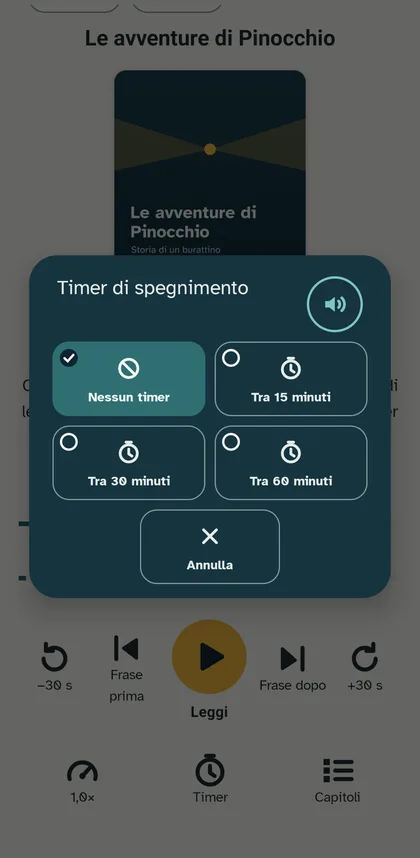
L'audiolibro legge il libro anche a schermo spento o mentre usi un'altra app. Lo comandi anche dalla notifica e dalle cuffie. Fa parte di +Plus.
- −30 s e +30 s: indietro o avanti di trenta secondi.
- Frase prima, Leggi, Frase dopo: come nel lettore.
- Velocità, Timer (spegnimento dopo 15, 30 o 60 minuti) e Capitoli.
- Lettura, in alto: torni a vedere il testo, dallo stesso punto.
In orizzontale la copertina sta a sinistra e i comandi in basso a destra:
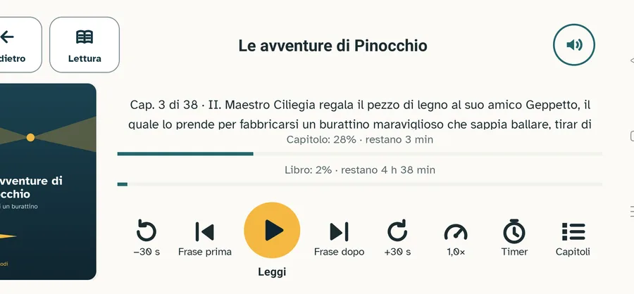
Impostazioni
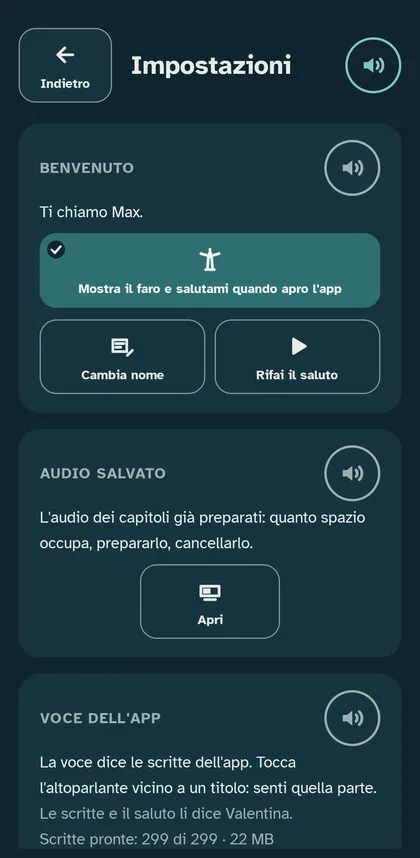
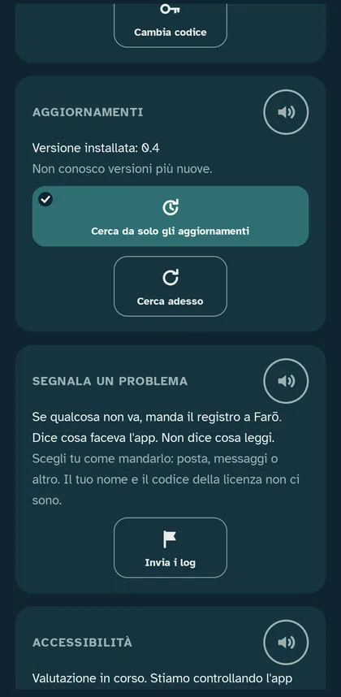

- Benvenuto: il tuo nome e il saluto del faro all'apertura.
- Audio salvato: quanto spazio occupa la voce già preparata.
- Voce dell'app: la voce che legge le scritte dell'app (gli altoparlanti).
- Licenza: il codice di +Plus.
- Aggiornamenti: l'app controlla da sola se c'è una versione nuova. Cerca adesso controlla subito.
- Segnala un problema: prepara un file con quello che è successo nell'app. Scegli tu a chi mandarlo.
- Accessibilità: come abbiamo controllato l'app. Leggi WCAG e Leggi CAA aprono le relazioni su questo sito.
Audio salvato
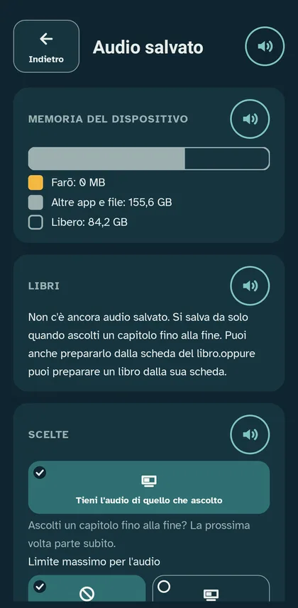
Quando ascolti un capitolo fino alla fine, la voce resta salvata e la volta dopo parte subito. Qui vedi quanto spazio occupa, puoi preparare un libro intero o cancellare l'audio. Puoi anche mettere un limite: oltre il limite si cancellano i libri che non ascolti da più tempo.
Licenza
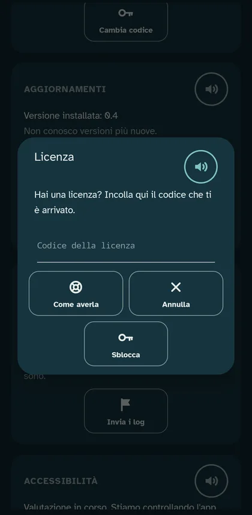
Farō Reader si usa gratis. +Plus aggiunge i tuoi libri EPUB, la lettura a turno, l'audiolibro, il fumetto con le sillabe e l'audio di un libro intero preparato prima. Per averla, tocca Come averla: si apre la pagina della versione completa. Il codice che ricevi si incolla qui.
Sul tablet
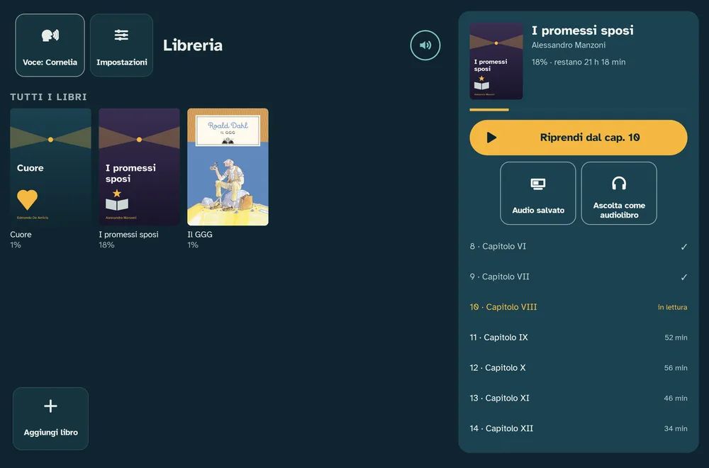
Sul tablet in orizzontale la libreria mostra accanto ai libri la scheda del libro scelto, con i capitoli. Nel lettore i pannelli si aprono di lato e il testo resta visibile:
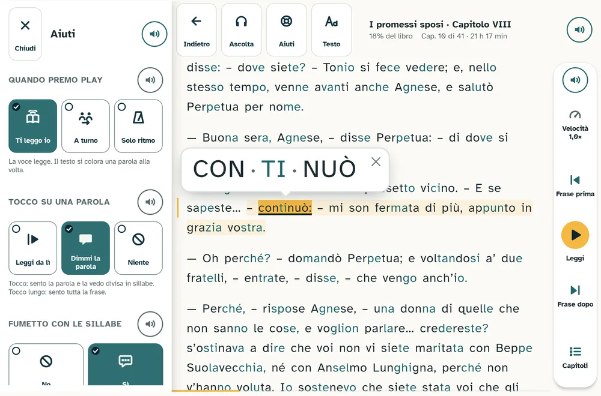